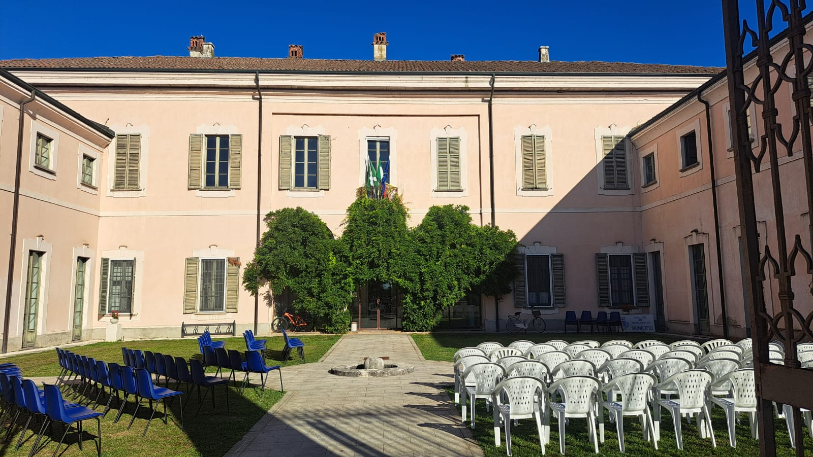

L'Evento
All’interno della prestigiosa Villa Mezzabarba a Borgarello (PV), oggi sede del Comune e della Biblioteca Comunale situata tra Milano e Pavia, avrete l’opportunità unica di assaggiare 70 formaggi rappresentativi dei territori dell’Arco Alpino. Vi immergerete in un percorso sensoriale potente e straordinario dal Nostrale d’Alpe della piemontese Valle Maira al Tombea della lombarda Val Vestino, dalla valdostana Estrema di Alpeggio al TrentinGrana di malga, dai formaggi a pasta molle sudtirolesi all’ Asiago Stravecchio per arrivare poi al raro friulano Cuc di Mont
Ogni produttore sarà raccontato attraverso un’audioguida accessibile tramite QR-Code per offrire un’esperienza di conoscenza unica e immersiva
Un banco di assaggi di vini, birre artigianali e sake, curati rispettivamente da FISAR Pavia, UnionBirrai e Sake Sommelier Association Italiana consentiranno di sbizzarrirsi in curiosi e intriganti abbinamenti con i formaggi presenti. Nell’arco delle due giornate si svolgeranno incontri e proiezione di docufilm
SCOPRI TUTTO IL PROGRAMMA

Ogni produttore sarà raccontato attraverso un’audioguida accessibile tramite QR-Code per offrire un’esperienza di conoscenza unica e immersiva
Un banco di assaggi di vini, birre artigianali e sake, curati rispettivamente da FISAR Pavia, UnionBirrai e Sake Sommelier Association Italiana consentiranno di sbizzarrirsi in curiosi e intriganti abbinamenti con i formaggi presenti. Nell’arco delle due giornate si svolgeranno incontri e proiezione di docufilm
SCOPRI TUTTO IL PROGRAMMA